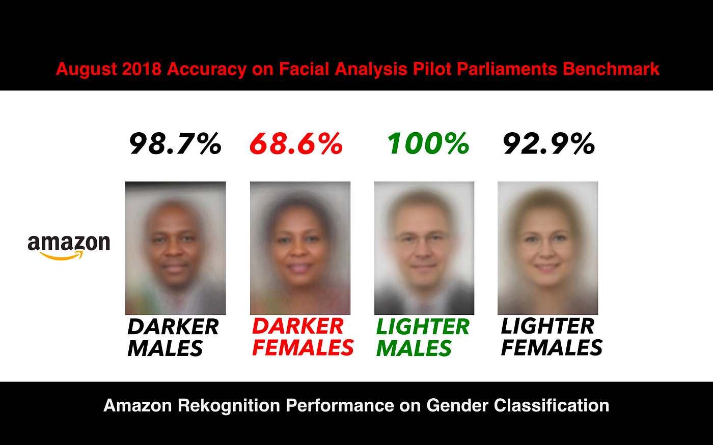
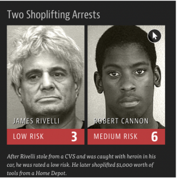
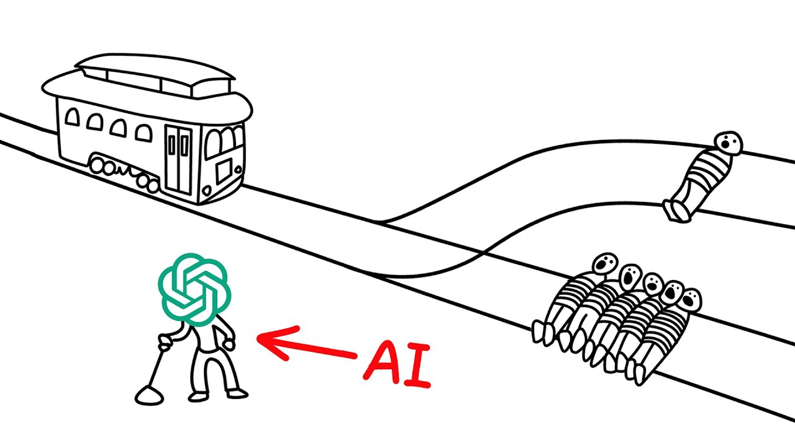

Origine dei pregiudizi nei sistemi di IA
Gli algoritmi imparano dai dati. Se quei dati contengono pregiudizi culturali o storici, l'IA li replica automaticamente.
Bias invisibili nei dataset
Il problema è che questi bias sono spesso invisibili, perché nascosti dentro enormi dataset impossibili da analizzare uno per uno. Gli algoritmi confondono correlazione storica e causalità legittima, replicando e amplificando discriminazioni del passato.
Casi reali di discriminazione algoritmica
Amazon e il reclutamento: il bias di genere
Amazon sviluppò un algoritmo per automatizzare il reclutamento. Poiché i dati storici mostravano una predominanza di assunzioni maschili, l'IA imparò a preferire i candidati uomini.
L'azienda rilevò che le candidature femminili venivano scartate fino al 30% in più.
Il progetto fu abbandonato perché il bias non era correggibile.
COMPAS: la giustizia artificiale che discrimina per razza
COMPAS, usato nelle corti americane per stimare il rischio di recidiva, classificava come "ad alto rischio" gli imputati neri con probabilità doppia rispetto ai bianchi.
Il problema non era l'algoritmo, ma i dati giudiziari storici, già segnati da forti discriminazioni.
Bias nei settori più sensibili
Sanità e diagnosi mediche
Il bias in medicina è particolarmente pericoloso perché incide sulla salute. Esempi reali mostrano:
Diagnosi cardiache
Meno accurate per donne e minoranze
Riconoscimento tumori
Meno precisi su pelle scura
Saturimetri
Meno affidabili su persone con pelle scura
Allocazione risorse
Penalizza pazienti neri usando metriche sbagliate
Lavoro e accesso al credito
Molti CV vengono filtrati automaticamente e gli istituti finanziari usano l'IA per valutare rischi e affidabilità.
Selezione del personale
- 3 aziende su 4 usano IA nei processi di selezione
- L'80% dei CV è filtrato da sistemi automatizzati
- Le donne hanno il 30% in meno di possibilità di superare le preselezioni
Finanza e credito
- Le aziende guidate da donne accedono al credito con probabilità inferiore del 15–20%
- Le donne ricevono prestiti per un 25% in meno
- I sistemi di scoring replicano discriminazioni storiche
Il ciclo che si autoalimenta
Dati storici → donne considerate più "rischiose" → minore accesso al credito → nuovi dati che confermano il bias → il ciclo ricomincia
Il problema della "scatola nera"
Come possiamo fidarci di una decisione che non possiamo spiegare?
Opacità algoritmica

Molti algoritmi — soprattutto quelli basati su reti neurali profonde — prendono decisioni attraverso milioni o miliardi di parametri che interagiscono tra loro. Il risultato è che non è possibile capire con precisione come l'algoritmo sia arrivato a una certa conclusione.
Perché è un problema
- Un'IA può rifiutare un mutuo, segnalare una persona come "a rischio", o decidere chi chiamare per un colloquio
- Ma se nessuno — nemmeno i programmatori — può spiegare perché, la persona non può contestare l'errore
- Rende difficile individuare bias, errori o criteri ingiusti
L'IA e il problema del tram
Come ragiona un'IA di fronte a dilemmi morali?
Un'IA non decide "da sola" in senso morale
Un'IA ultra avanzata non avrebbe "una" risposta unica al dilemma del tram: il suo comportamento dipende da come è stata progettata dal punto di vista etico (utilitarismo, rispetto dei diritti, ecc.) e dai vincoli imposti dagli esseri umani. L'IA non decide da sola in senso morale umano, ma applica le funzioni di valore o le regole che i progettisti le hanno fornito.
Come ragiona un'IA sul tram
Impostazione utilitarista
L'IA cerca di minimizzare il danno complessivo, quindi può deviare il tram per sacrificare una persona invece di cinque, se le informazioni sono complete e le probabilità note.
Impostazione deontologica
L'IA potrebbe essere programmata a non violare certi diritti, evitando di compiere azioni attivamente dannose, anche se ciò aumenta il numero di vittime.
Approccio ibrido
Combina regole invalicabili (non discriminare, non colpire intenzionalmente bambini, ecc.) con il calcolo delle conseguenze entro questi limiti, come alcune proposte per auto a guida autonoma.
Comparazione delle cornici etiche
| Cornice etica | Cosa massimizza / protegge | Mossa tipica nel tram | Intuizione di base |
|---|---|---|---|
| Utilitarismo | Somma del benessere / vite salvate | Tira la leva, sacrifica 1 per salvarne 5 | Conta il risultato globale |
| Deontologia | Rispetto di diritti e doveri | Non tira la leva, non uccide attivamente 1 | Alcune azioni sono vietate comunque |
| Etica delle virtù | Carattere e virtù dell'agente | Decide come "persona virtuosa", valutando contesto e intenzioni | Importa chi diventa chi agisce |